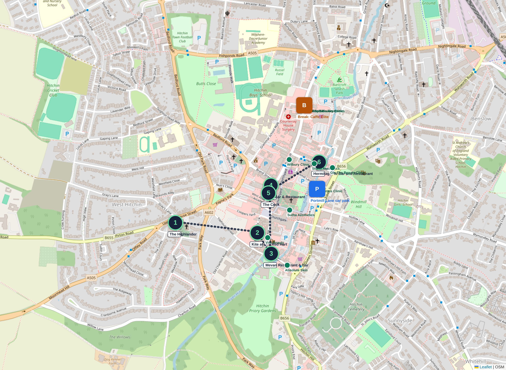

| 09:50 | Drive from Sandy, about 30 minutes. | ||
| 10:20 | P | Park: Portmill Lane car park, Hitchin SG5 1DJ. Short stay, so check the maximum stay board covers five hours. | |
| 10:30 | 1 | The Highlander, 45 Upper Tilehouse St | 01462 454612 |
| 10:50 | 2 | Kite at The Red Hart, 28-29 Bucklersbury | 01462 441551 |
| 11:10 | 3 | Mevan, 11 Sun St | 01462 421040 |
| 11:35 | 4 | Ibo's, 11 High St | 01462 654321 |
| 11:50 | 5 | The Cock, 8 High St | 01462 539200 |
| 12:00 | B | Break: Caffe Elite, 93A Bancroft SG5 1NQ. Sit down, eat, no pitching. | |
| 13:00 | Clinic flyer drops: Bancroft 3, 35, 46A and 54, then Bridge St 27 and Portmill Lane. | ||
| 14:00 | 6 | Hermitage Rd Bar and Restaurant, 20-21 Hermitage Rd | 01462 433603 |
| 15:00 | Back to the car, log every visit in the pipeline, drive home. |